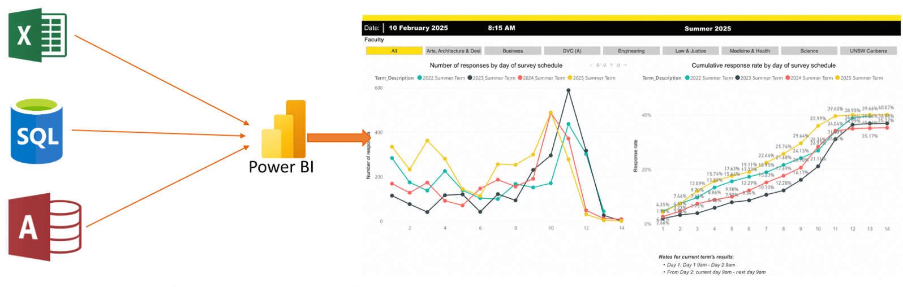

What is
Business Intelligence (BI)?
BI helps organizations turn raw data into actionable insight. — provided you already know exactly what to ask.

First ask: is the
output actually falling?
The analyst first asks the database team: "How do we connect papers to institutions? Which field identifies Russia?" After rounds of back-and-forth, a combined table is manually built, then grouped by year.

The moment the result lands, the next question appears: why is it falling?

Fresh requirements meeting, fresh combined table, fresh full computation.
Nothing from Step 1 can really be carried forward.
Next ask: did
funding change too?
Output has dropped, so the analyst wants to look at funding — but that requires re-combining papers, institutions, and funding data from scratch. The data structure is fixed; you can't add Funding onto Step 1's result. So the analyst must re-align with the database team, rebuild the table, and recompute everything.
Then ask: did EC redirect
to Ukraine?
Comparing Russia's funding to Ukraine's needs yet another data source — now linking four tables together. Another conversation with the database team, another rebuild, another full recompute.


Beyond the first three rounds,
what else shows up?
If you're willing to keep digging — and pay for more rounds of data preparation — the data hides even stranger signals.
Russian academic output nearly halved from 2021 to 2024. Global baseline: only −27.6%.
US-Russia −92.5%, Germany-Russia −93.0%, China-Russia −80.4% — nearly every partner severed.
Turkey imposed no sanctions — yet Turkey-Russia collaboration fell more than any sanctioning country.


The same case, done differently—
Exploratory BI
Not three separate analyses, but one dataset that keeps growing: each step builds on the previous result.

The same case: Step 1 → Step 2 → Step 3 — no rebuilding, no duplicated work.
Russian publication counts over time.
No new analysis round needed — new information is added on top of what's already there.
Steps are logically connected. Insights build on each other, instead of living in three isolated reports.
OpenCLAW × Lark
For this demo, we use OpenCLAW as the Agent platform hosting the Skill Suite, and deploy it inside Lark (Feishu) — a chat tool users already use every day. Zero learning curve.

User says "show me the schema" — the system presents the data structure and scale.

The main agent decomposes the question, dispatches sub-agents, and digs into root causes layer by layer.

A complete report — key findings, causal analysis — ready to share.
Connected to OpenAIRE: 22.4M vertices, 94.4M edges.
The full Russia-Ukraine analysis was generated autonomously by this bot — the user said a single sentence, start to finish.
Ready to Explore?
Dataset, demo system, and generated reports — all packaged and ready to run.

Thank You
Questions & Discussion
什么是商业智能 (BI)？
解决看数难，分析慢等痛点。将零散的原始数据转化为直观的图表和洞察

每个答案背后，
都藏着新的问题
BI 很擅长把某一个已知问题答清楚。但真实研究里，每个答案往往都会引出下一个问题。让我们用一个真实案例来看看这意味着什么。
让我们用一个真实案例来看看传统 BI 到底卡在哪里——三轮追问会彻底暴露它的局限。
先问：产出
到底在不在变？
分析师先找数据库管理员沟通：论文和机构的数据怎么关联？"俄罗斯"按哪个字段筛选？反复确认之后，手动把多张表拼成一张大表，再按年份汇总。
结果一出来，下一个问题立刻冒出来：为什么会掉？
新一轮的需求沟通、新一张拼接表、新一次全量计算。
Step 1 的工作几乎不能复用。
再问：资助
有没有同步变化？
产出掉了，想看资助——需要重新把论文、机构、资助三份数据拼到一起。数据结构是写死的，没办法把资助信息加到上一步的结果里；分析师只能重新和数据库管理员对齐、重新建表、重新计算。
再问：欧委会是不是
转向了乌克兰？
要对比俄乌的资助关系，还得再加入一份新的数据——现在要把 4 份数据拼在一起。分析师再一次和数据库管理员沟通、再一次重建、再一次全量计算。
三轮分析之外，
还能看到什么？
如果愿意继续深挖、再多做几轮数据准备——数据里还藏着更反常识的信号。
2021 → 2024 年，俄罗斯学术产出接近腰斩。全球基线仅 −27.6%。
美俄 −92.5%、德俄 −93.0%、中俄 −80.4%，几乎全部合作伙伴断裂。
土耳其没有制裁俄罗斯，但土俄合作跌幅超过所有制裁国。
为什么传统 BI 工作流
撑不起探索式分析？
重度依赖专家经验
分析师必须预先识别所有可能相关的数据源，和数据库管理员反复沟通才能准备数据。遗漏或误判，结论就偏。
数据关联的计算成本高
大规模数据下，把多个数据源关联起来既慢又吃内存。Step 3 那一步要关联 1.93 亿篇论文和 5100 万条论文-机构关系。
数据模型是写死的
数据结构一旦定下来，分析期间不能实时修改。发现新维度？只能重启一轮从零搭建——探索没法"边走边改"。
之前的工作无法复用
刚才案例里，论文与机构的关联计算被重复做了 3 次。每一轮都从零开始，上一轮的工作全部丢掉。
同一个 case，换一种方式做——
探索式 BI
不再"三次从头分析"，而是一份不断生长的数据：每下一步都在上一步的结果上做增量。
回到刚才的案例：Step 1 → Step 2 → Step 3——没有重建，没有重复计算。
得到俄罗斯产出的时序数据。
不用重开一轮，直接把新信息接到已有的结果上。
各轮之间有逻辑连接——洞察可以跨步综合，而不是三份孤立的报告。
OpenCLAW × 飞书
这次 demo 里，我们用 OpenCLAW 作为承载 Skill Suite 的 Agent 平台，并把它部署到飞书——用户每天都在用的聊天工具，零学习成本。
用户说"给我看一下 schema"——系统呈现数据结构与规模。
主 agent 拆解问题、调度子 agent，逐层挖掘根因。
一份完整报告——关键发现、因果分析，可直接分享。
接入 OpenAIRE：2,240 万顶点、9,440 万边。
整份俄乌学术分析就是通过这个 bot 自主生成的——用户全程只用说一句话。